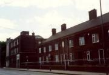
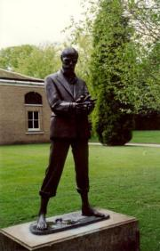
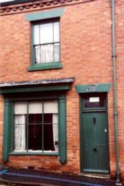
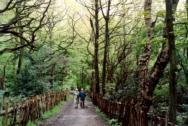

Discovering my roots in Nottingham10.32pm. In bed at Ron Faulk’s bungalow, 24 Briarwood Avenue, Nottingham, where we arrived about 5.20pm yesterday. We spent nearly three hours with the family [at Solihull, where we saw Clarice’s new house] on the way up. A remarkable day. Ron drove us no great distance to Westminster Close, on the site of Westminster Street where Dad was born [on 27 February 1907] at 1 Franchise Terrace. The streets and terraces, still here when I used to preach at Hungerhill Road, were all swept away in the late 1960s, but Cromer Street, next street along, still remains, relatively unspoiled. As a toddler Dad must many times have been up this road and round about. We walked up and down Hungerhill Road, of which nothing remains: there is no hint of where the church used to be, but perhaps we have a colour slide. [No! — slide 01308, photographed on Saturday 12 October 1963, is of a different church, on the corner of Bathley Street and Lamcote Grove.] From there, Ron drove us to St Matthias’ Church, Sneinton, where my great-grandparents Edward Henry and Mary Elizabeth Barker were married on 9th April 1882, and Walker Street where they lived. He was manager of a box warehouse. Although all the old buildings have gone, the street remains. Next we visited Sneinton Parish Church of St Stephen and St Alban and saw the gravestone of Ron’s grandparents. From there we walked to the birthplace, now a museum, of General William Booth, where we were most cordially received and refreshed with coffee and biscuits. I saw the name of Cyril Barnes, whom I knew personally. Across the road from where we parked the car (Ron’s) was the Congregation of Yahweh, which I recognised as Peter Warsop’s church. I wonder if he and Joyce are still alive? I should love to see them again. I feel not the slightest ill-will towards Peter, though he was my Alexander the Coppersmith. After this Ron drove us to John Lewis’s, parking beneath the store in what used to be the LNER station and is now the largest underground car park in Europe. I treated us to lunch of carrot and orange soup and roll and butter, followed by pancakes and fruit and ice cream, £13.25, a bit expensive for us but a pleasant meal. Finally Ron took us to the Local Studies building where I had a not very productive time trying to trace the occupants of 82 Coalpit Lane where Grandad [Ernest Alfred Williams] was born on 11 October 1882. Oddly, the 1881 Census shows a George Williams (69), Ann (37) and Arthur (11) living there, whom I have never heard of. So who are they? This evening we have been talking about Bert Lawrence. Ron read from Sons and Lovers about “Aggie Bower” being asked for as midwife at Paul’s birth. I have been perusing Jane Maskrey’s doctoral thesis from 25-30 years ago, of the characters in Lawrence’s stories and their real identity. In Delilah and Mr Bircumshaw (1911-12) Ethel & Henry Bircumshaw appear, and Miriam B. was a neighbour of the Lawrences at Lynncroft. In The Miner at Home Mr Bower is based on Lawrence’s father, Gertie Bower (Gertrude in Sons and Lovers) is based on his mother, and Jack Bower may represent himself as a child. |
Coal Pit Lane10.30pm. Just retired to bed after a wonderful day tracing the footsteps of Bert Lawrence and also of Dad’s family, and visiting places we knew decades ago. After a most interesting morning, which began with a visit to Private Road, and Cowley, the home of Ernest Weekley and Frieda, we were heading for the underground car park when Freda exclaimed excitedly for me to look at the street-sign we were just passing. It said: “Cranbrook Street, formerly Coal Pit Lane”. After lunch at the Moat House I went alone down Parliament Street and explored Cranbrook Street, taking several photos in the process. On the right-hand side I found a terrace of houses numbered 20-38, flanked by offices and factories. If these occupy a similar position to the terrace in the former Coalpit Lane, then 52 was where Burton’s now stands. It was not difficult therefore to picture the street as it looked when Grandad was born there in 1882. I rejoined Freda & Ron at the Victoria shopping mall, then Ron drove us to Shakespeare Street and Nottingham Trent University, where later we had tea on the campus. I was very moved by a life-size bronze statue of Bert which seemed almost alive: it was sculpted by Diana Cunliffe-Thomas — I took a photo of it. Ron hoped to introduce us to Professor John Worthen but he was not there. We saw so many places today, looked at 12 St Judes Avenue where we used to stay; and Baker Street, now truncated by the girls’ school; the Goosefair site; Old Market Square; the Council House, Ice Rink and Theatre Royal — and tramlines being laid in the City centre! |

20–38 Cranbrook Street, formerly Coal Pit Lane The life-size bronze statue of D.H. Lawrence, by Diana Cunliffe-Thomas |
In the footsteps of D.H. Lawrence9.50pm. Another wonderful day. We went to Greasley Beauvale D.H. Lawrence School, where Pam Stoner, the head teacher, received us. The school is little changed since Bert was there. Next we looked at the Lawrence houses at Lynncroft (plaster coming off the front and in a bad state of repair), and 6 Walker Street, a terraced house which Ron thinks may be the wrong one — Mr Lawrence planted a wistaria in the back garden and it is still there, but next door! We also visited the public library with its fine collection of DHL books — this is where the society holds its meetings on the second Wednesday of the month — and from there, the house where Bert was born, 8A Victoria Street, which is now a museum. I bought postcards of the parlour, the kitchen and the front bedroom. We shopped briefly at Safeway, then went to Durban House, formerly the offices of Barber, Walker and Co where Bert used to collect his father’s wages, and now also a museum. We had lunch there, then went upstairs, where Ron has mounted a display. Finally, Ron drove us to Moorgreen reservoir where we walked through bluebell woods, following the path so often trodden by Bert on his way to the Haggs — an unforgettable experience, the sun piercing the gloom of a bleak wet day. Ron took us to Hucknall tonight to the home of his son Chris and wife Pat; they took us to the Beefeater at Paddlewick for supper. |

The birthplace of D.H. Lawrence, 8A Market Street, which is now a museum Freda and Ron Faulks on the path by Moorgreen reservoir where Lawrence often walked |